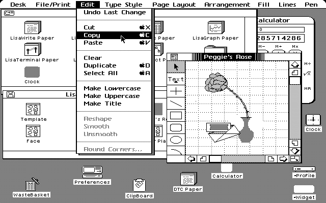
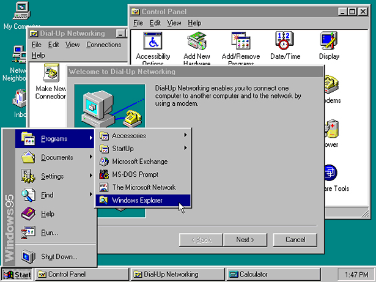

Engineers at Apple developed the Lisa interface. They implemented pull-down menus, drag-and-drop motions, and the menu bar at the top of the user's screen that we still see in computers today. Until then, The graphical user interface gradually gained public popularity after Apple's iconic Superbowl ad in 1984, marking the release of the Apple Macintosh which featured the Lisa interface.

The Lisa's graphical user interface

The interface of Windows 95
Windows took over the GUI lead with its release of Windows 95. Microsoft touted the operating system as the "Easiest Windows Yet!" The desktop was used to hold computer shortcuts, currently running applications were denoted on the bottom bar, and the iconic Start button was introduced. With an enormously successful launch, the graphical user interface was here to stay.